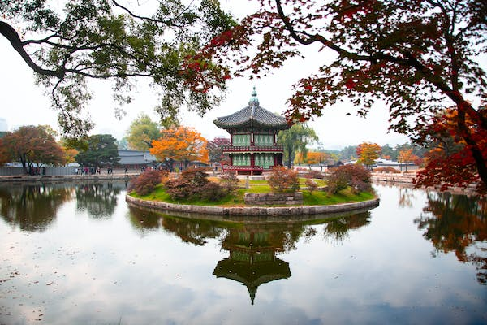

Korean Culture
Korean culture includes the country's history, customs, traditions, and beliefs. It has been shaped by each of its numerous dynasties, wars, changes in religious beliefs, global modernism, and many more practices and traditions that have been passed down through centuries, with subtle variations with each generational pass. The long-standing tensions between North and South Korea, which were separated in 1945, continue to shape both countries today.Korean culture also includes its food, holidays, national sports, and cultural conventions, as well as its popular culture in the form of music, movies, dramas, and fashion. And these are only a few of the little elements that make up the culture as a whole.
 Check out this video for a cultural guide to South Korea